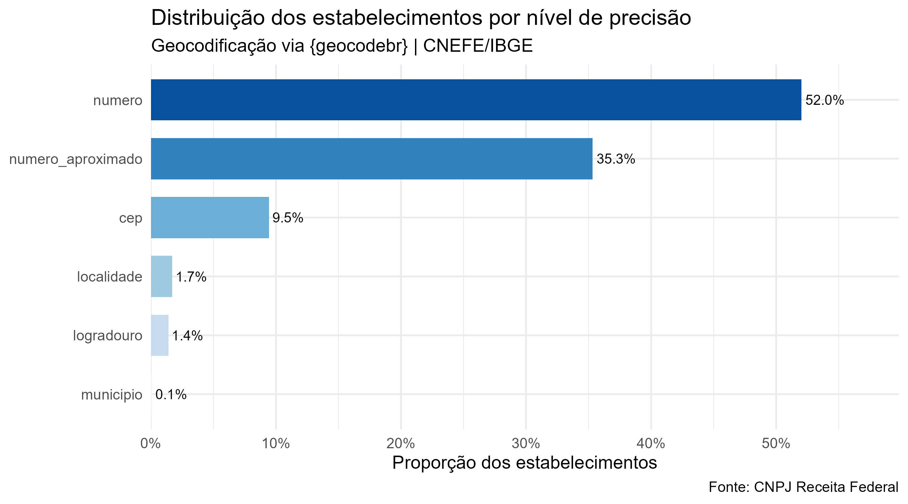
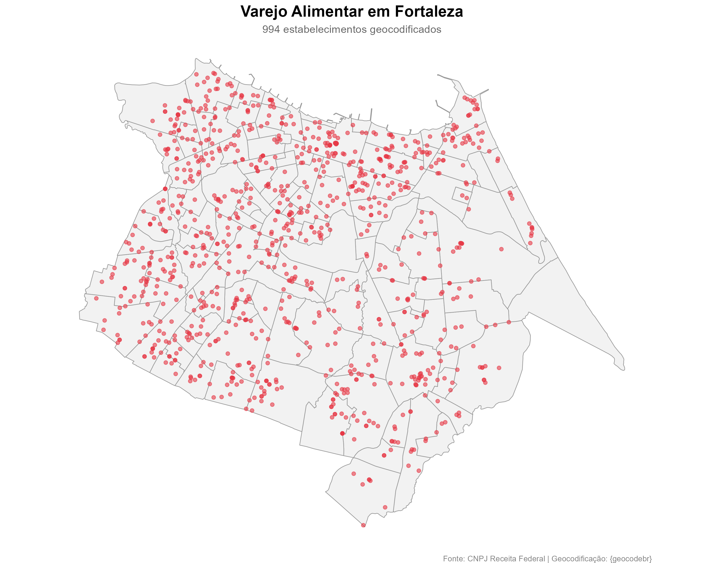
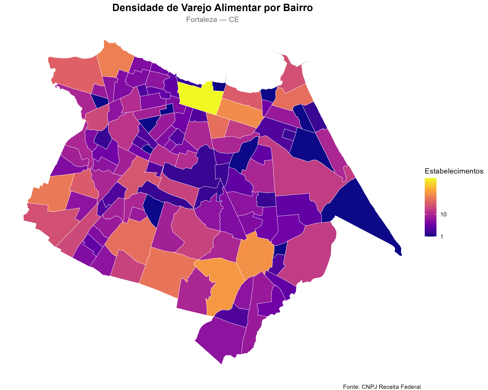
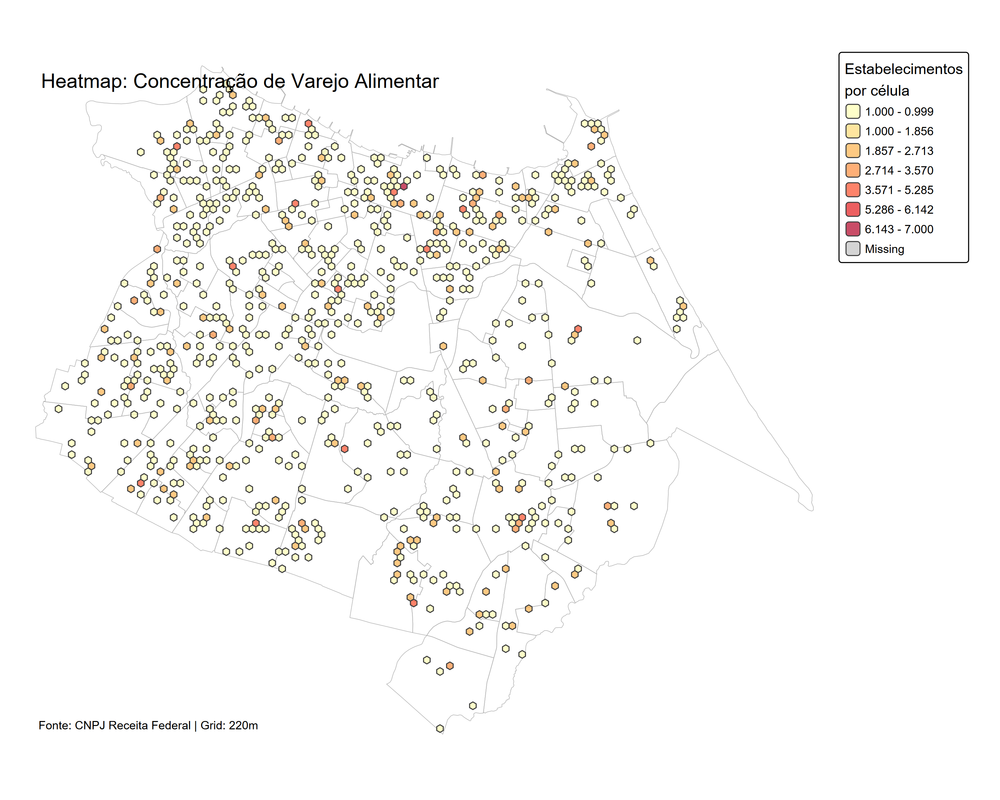
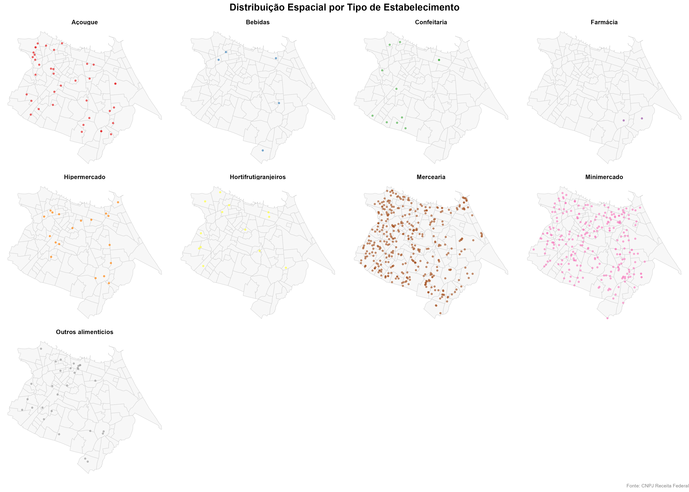

Geolocalização de estabelecimentos via CNPJ e {geocodebr}
abril de 2026
O Programa Nutricash tem por objetivo ampliar o acesso da população em situação de vulnerabilidade alimentar a estabelecimentos de varejo alimentar em Fortaleza.
Para apoiar a gestão e o monitoramento do programa, surge a necessidade de localizar espacialmente os estabelecimentos credenciados e compreender sua distribuição geográfica na cidade.
Problema central
Como identificar e mapear com precisão os estabelecimentos do varejo alimentar em Fortaleza a partir de bases de dados abertas?
A análise espacial dos estabelecimentos permite:
Geolocalizar os estabelecimentos de varejo alimentar em Fortaleza cadastrados na base do Programa Nutricash, a partir do cruzamento com o Cadastro Nacional de Pessoa Jurídica (CNPJ) da Receita Federal, e elaborar visualizações cartográficas de sua distribuição espacial.
.ESTABELE){geocodebr}*.ESTABELE{targets} — DAG de dependências{tarchetypes} — helpers para targets{arrow} — leitura/escrita Parquet{dplyr} — manipulação de dados{readr} — leitura chunked dos CSVs{stringr} — limpeza de strings{fs} — manipulação do sistema de arquivos{ggplot2} + {sf} — mapas estáticos{leaflet} — mapa interativo{tmap} — heatmapO que é o {geocodebr}?
Pacote desenvolvido pelo Ipea com apoio do ItpS para geolocalização de endereços brasileiros, utilizando o CNEFE/IBGE como referência — sem limite de consultas e com processamento local.
fortaleza |>
dplyr::mutate(
logradouro = stringr::str_c(tipo_logradouro, " ", logradouro),
municipio = "Fortaleza"
) |>
geocodebr::geocode(
campos_endereco = geocodebr::definir_campos(
estado = "uf", municipio = "municipio", cep = "cep",
logradouro = "logradouro", localidade = "bairro", numero = "numero"
),
resultado_completo = TRUE,
padronizar_enderecos = TRUE
)O pacote classifica cada resultado em 6 níveis, do mais ao menos preciso:
| Nível | Descrição |
|---|---|
numero |
Coordenada calculada a partir do número exato no logradouro |
numero_aproximado |
Interpolação espacial quando o número não tem correspondência exata |
logradouro |
Centro do logradouro (número ausente ou S/N) |
cep |
Centróide do CEP |
localidade |
Centróide do bairro |
municipio |
Centróide do município |
O pacote também retorna uma estimativa de incerteza em metros para cada resultado.
library(ggplot2)
library(dplyr)
library(scales)
library(forcats)
geoloc_filtrado |>
count(precisao) |>
mutate(
precisao = fct_reorder(precisao, n),
pct = n / sum(n)
) |>
ggplot(aes(x = precisao, y = pct, fill = precisao)) +
geom_col(show.legend = FALSE, width = 0.7) +
geom_text(aes(label = percent(pct, accuracy = 0.1)),
hjust = -0.1, size = 3.5) +
scale_y_continuous(
labels = percent_format(),
expand = expansion(mult = c(0, 0.15))
) +
scale_fill_brewer(palette = "Blues", direction = 1) +
coord_flip() +
theme_minimal(base_size = 13) +
labs(
title = "Distribuição dos estabelecimentos por nível de precisão",
subtitle = "Geocodificação via {geocodebr} | CNEFE/IBGE",
x = NULL, y = "Proporção dos estabelecimentos",
caption = "Fonte: CNPJ Receita Federal"
)
ggsave("output/precisao_barras.png", width = 9, height = 5, dpi = 300, bg = "white")
Interpretação
Quanto maior a proporção nos níveis numero e numero_aproximado, melhor a qualidade geral da geocodificação. Proporções elevadas em cep, localidade ou municipio indicam endereços incompletos ou ausentes na base do CNPJ.


O mapa interativo foi exportado como arquivo HTML autocontido:
output/mapa_interativo.htmlFuncionalidades disponíveis:
Abra
output/mapa_interativo.htmlno navegador para exploração completa.

Grid hexagonal de ~220m por célula com quebras naturais de Jenks, revelando os núcleos de maior concentração do varejo alimentar.

Processamento
994 estabelecimentos em FortalezaCruzamento
Geocodificação
precisao)Produtos gerados
apenas_ativas = FALSE), podendo incluir empresas inativasBRASIL. Portal de Dados Abertos. Cadastro Nacional da Pessoa Jurídica — CNPJ. Disponível em: dados.gov.br. Acesso em: 26 fev. 2026.
PEREIRA, R. H. M.; HERSZENHUT, D. geocodebr: Geolocalização de Endereços Brasileiros. Ipea, 2025. Disponível em: ipeagit.github.io/geocodebr. Acesso em: 26 fev. 2026.
LANDAU, W. M. The targets R package: A dynamic Make-like function-oriented pipeline toolkit for reproducibility and high-performance computing. Journal of Open Source Software, v. 6, n. 57, p. 2959, 2021.
João Victor Batista Lopes
Assessor Técnico | DISOC – IPECE
Dados abertos · Código aberto · Ciência reprodutível
DISOC – IPECE | Mapeamento do Varejo Alimentar em Fortaleza